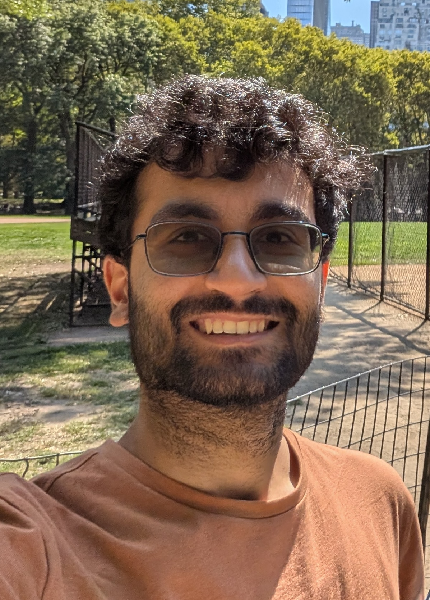

Anubhav Baweja
I am a PhD student at the University of Pennsylvania, advised by Pratyush Mishra and Sampath Kannan. My research interests lie at the intersection of cryptography, streaming algorithms, and sublinear algorithms. Much of my recent work has focused on hash-based proof systems.
I obtained my BS and MS in computer science from Carnegie Mellon University in 2021, where I was advised by David Woodruff and Guy Blelloch. Before starting my PhD, I worked at Citadel Securities as a quantitative research analyst for two years.
Preprints
Publications
FICS and FACS: Fast IOPPs and Accumulation via Code-Switching
zkProof 8
Query-Optimal IOPPs for Linear-Time Encodable Codes
zkProof 8 EUROCRYPT 2026 video slides
Scribe: Low-memory SNARKs via Read-Write Streaming
Time-Space Trade-Offs for Sumcheck
Average-Distortion Sketching
An Efficient Semi-Streaming PTAS for Tournament Feedback Arc Set with Few Passes
Efficient Parallel Self-Adjusting Computation
Service
External subreviewer for STOC 2024, ICALP 2024, APPROX 2024, CRYPTO 2025 and 2026, TCC 2026, and ASIACRYPT 2026.
Teaching
CIS 556: Cryptography
University of Pennsylvania · Teaching Assistant
CIS 556: Cryptography
University of Pennsylvania · Teaching Assistant
CIS 677: Randomized Algorithms
University of Pennsylvania · Teaching Assistant
15-210: Parallel and Sequential Data Structures and Algorithms
Carnegie Mellon University · Head Teaching Assistant
15-151: Mathematical Foundations for Computer Science
Carnegie Mellon University · Teaching Assistant
15-122: Principles of Imperative Computation
Carnegie Mellon University · Teaching Assistant